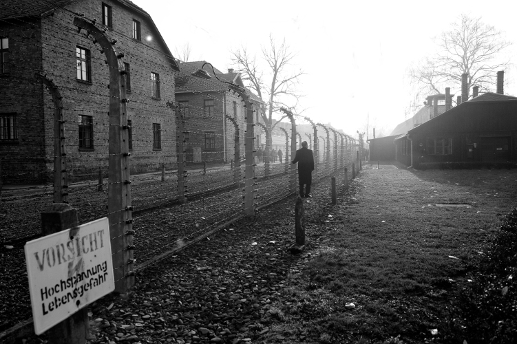

In 2013, while on a visit to Warsaw, Poland, Secretary-General Ban Ki-moon (right) visited the Nazi concentration camp at Auschwitz-Birkenau where more than a million Jews and members of other minorities perished during World War II. Warning that the world must never forget, deny or downplay the Holocaust, Ban said: “I stand in disbelief before the gas chambers and crematorium, and shudder at the cruelty of those who designed this death factory.” Hatred and persecution have not ended, he cautioned, adding that, in Europe and elsewhere, migrants and minorities face rising discrimination. “We must remain ever on our guard. And we must do more, far more, to promote equality and fundamental freedoms,” he said.
UN Photo/Evan Schneider
